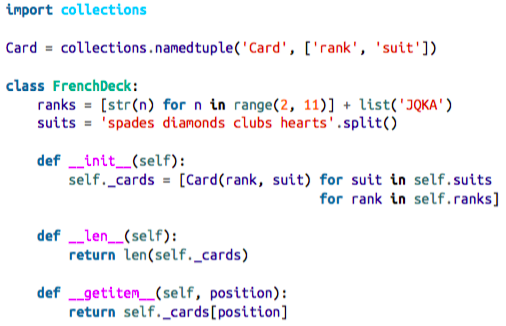
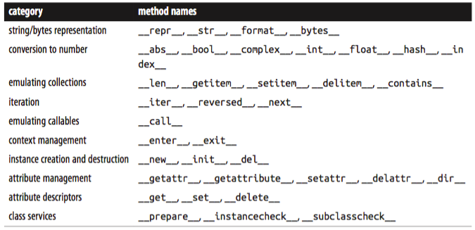
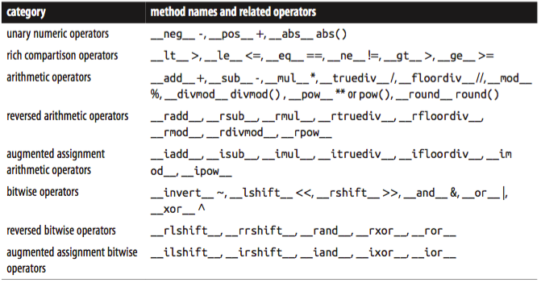

1. The Python Data Model
Table of Contents
The Python interpreter invokes special methods to perform basic object operations, often triggered by special syntax. The special method names are always spelled with leading and trailing double underscores, i.e. __getitem__. For example, the syntax obj[key] is supported by the __getitem__ special method. To evaluate my_collection[key], the interpreter calls my_collection.__getitem__(key).
The special method names allow your objects to implement, support and interact with basic language constructs such as:
- iteration;
- collections;
- attribute access;
- operator overloading;
- function and method invocation;
- object creation and destruction;
- string representation and formatting;
- managed contexts (i.e. with blocks);
Tip: The special methods are also known as dunder methods, e.g. getitem is called "dunder-getitem".
A Pythonic card deck
Example 1-1. A deck as a sequence of cards.

ME: TDD with doctest
example_1_1.py:
"""A deck as a sequence of cards. >>> beer_card = Card('7', 'diamonds') >>> beer_card Card(rank='7', suit='diamonds') >>> deck = FrenchDeck() >>> len(deck) 52 >>> deck[0] Card(rank='2', suit='spades') >>> deck[51] Card(rank='A', suit='hearts') """ import collections Card = collections.namedtuple('Card', ['rank', 'suit']) class FrenchDeck: ranks = [str(n) for n in range(2, 11)] + list('JQKA') suits = 'spades diamonds clubs hearts'.split() def __init__(self): self._cards = [Card(rank, suit) for suit in self.suits for rank in self.ranks] def __len__(self): return len(self._cards) def __getitem__(self, position): return self._cards[position]
Then:
$ python -m doctest example_1_1.py
Python already has a function to get a random item from a sequence: random.choice. We can just use it on a deck instance:
>>> from random import choice >>> choice(deck) Card(rank='3', suit='hearts') >>> choice(deck) Card(rank='K', suit='spades') >>> choice(deck) Card(rank='2', suit='clubs')
We’ve just seen two advantages of using special methods to leverage the Python Data Model:
- The users of your classes don’t have to memorize arbitrary method names for standard operations (“How to get the number of items? Is it .size() .length() or what?”)
- It’s easier to benefit from the rich Python standard library and avoid reinventing the wheel, like the random.choice function.
But it gets better.
Because our getitem delegates to the [] operator of self._cards, our deck automatically supports slicing. Here’s how we look at the top three cards from a brand new deck, and then pick just the aces by starting on index 12 and skipping 13 cards at a time:
>>> deck[:3] [Card(rank='2', suit='spades'), Card(rank='3', suit='spades'), Card(rank='4', suit='spades')] >>> deck[12::13] [Card(rank='A', suit='spades'), Card(rank='A', suit='diamonds'), Card(rank='A', suit='clubs'), Card(rank='A', suit='hearts')]
Just by implementing the getitem special method, our deck is also iterable:
>>> for card in deck: # doctest: +ELLIPSIS ... print(card) Card(rank='2', suit='spades') Card(rank='3', suit='spades') Card(rank='4', suit='spades') ...
The deck can also be iterated in reverse:
>>> for card in reversed(deck): # doctest: +ELLIPSIS ... print(card) Card(rank='A', suit='hearts') Card(rank='K', suit='hearts') Card(rank='Q', suit='hearts') ...
Tip: Whenever possible, the Python console listings in this book were extracted from doctests to insure accuracy. When the output was too long, the elided part is marked by an ellipsis … like in the last line above. In such cases, we used the # doctest: +ELLIPSIS directive to make the doctest pass.
Iteration is often implicit. If a collection has no __contains__ method, the in operator does a sequential scan. Case in point: in works with our FrenchDeck class because it is iterable. Check it out:
>>> Card('Q', 'hearts') in deck True >>> Card('7', 'beasts') in deck False
How about sorting? A common system of ranking cards is by rank (with aces being highest), then by suit in the order: spades (highest), then hearts, diamonds and clubs (lowest). Here is a function that ranks cards by that rule, returning 0 for the 2 of clubs and 51 for the ace of spades:
suit_values = dict(spades=3, hearts=2, diamonds=1, clubs=0) def spades_high(card): rank_value = FrenchDeck.ranks.index(card.rank) return rank_value * len(suit_values) + suit_values[card.suit]
Given spades_high, we can now list our deck in order of increasing rank:
>>> for card in sorted(deck, key=spades_high): # doctest: +ELLIPSIS ... print(card) Card(rank='2', suit='clubs') Card(rank='2', suit='diamonds') Card(rank='2', suit='hearts') ... (46 cards ommitted) Card(rank='A', suit='diamonds') Card(rank='A', suit='hearts') Card(rank='A', suit='spades')
Although FrenchDeck implicitly inherits from object, its functionality is not inherited, but comes from leveraging the Data Model and composition. By implementing the special methods len and getitem our FrenchDeck behaves like a standard Python sequence, allowing it to benefit from core language features — like iteration and slicing—and from the standard library, as shown by the examples using random.choice, reversed and sorted. Thanks to composition, the len and geti tem implementations can hand off all the work to a list object, self._cards.
Note: How about shuffling?
As implemented so far, a FrenchDeck cannot be shuffled, because it is immutable: the cards and their positions cannot be changed, ex‐ cept by violating encapsulation and handling the _cards attribute directly. In Chapter 11 that will be fixed by adding a one-line __setitem__ method.
How special methods are used
But for built-in types like list, str, bytearray etc., the interpreter takes a shortcut: the CPython implementation of len() actually returns the value of the ob_size field in the PyVarObject C struct that represents any variable-sized built-in object in memory. This is much faster than calling a method.
Normally, your code should not have many direct calls to special methods. Unless you are doing a lot of metaprogramming, you should be implementing special methods more often than invoking them explicitly. The only special method that is frequently called by user code directly is __init__, to invoke the initializer of the superclass in your own __init__ implementation.
If you need to invoke a special method, it is usually better to call the related built-in function, such as len, iter, str etc. These built-ins call the corresponding special method, but often provide other services and — for built-in types — are faster than method calls. See for example “A closer look at the iter function” on page 438 in Chapter 14.
Avoid creating arbitrary, custom attributes with the__foo__syntax because such names may acquire special meanings in the future, even if they are unused today.
Emulating numeric types
Several special methods allow user objects to respond to operators such as +. We will cover that in more detail in Chapter 13.
Example 1-2 is a Vector class implementing the operations just described, through the use of the special methods repr, abs, add and mul:
Example 1-2. A simple 2D vector class.
"""2D vector. >>> v1 = Vector(2, 4) >>> v2 = Vector(2, 1) >>> v1 + v2 Vector(4, 5) >>> v = Vector(3, 4) >>> abs(v) 5.0 >>> v * 3 Vector(9, 12) >>> abs(v * 3) 15.0 """ from math import hypot class Vector: def __init__(self, x=0, y=0): self.x = x self.y = y def __repr__(self): return "Vector(%r, %r)" % (self.x, self.y) def __abs__(self): return hypot(self.x, self.y) def __bool__(self): return bool(abs(self)) def __add__(self, other): x = self.x + other.x y = self.y + other.y return Vector(x, y) def __mul__(self, scalar): return Vector(self.x * scalar, self.y * scalar)
As mentioned before, the Python interpreter is the only frequent caller of most special methods.
In the next sections we discuss the code for each special method.
String representation
The __repr__ special method is called by the repr built-in to get string representation of the object for inspection. If we did not implement repr, vector instances would be shown in the console like <Vector object at 0x10e100070>.
The interactive console and debugger call repr on the results of the expressions evaluated, as does the '%r' place holder in classic formatting with % operator, and the !r conversion field in the new Format String Syntax used in the str.format method.
Note that in our repr implementation we used %r to obtain the standard representation of the attributes to be displayed. This is good practice, as it shows the crucial difference between Vector(1, 2) and Vector('1', '2') — the latter would not work in the context of this example, because the constructors arguments must be numbers, not str.
Note: The string returned by repr should be unambiguous and, if possible, match the source code necessary to recreate the object being represented. That is why our chosen representation looks like calling the constructor of the class, e.g. Vector(3, 4).
Contrast __repr__ with __str__, which is called by the str() constructor and implicitly used by the print function. str should return a string suitable for display to end-users.
If you only implement one of these special methods, choose repr, because when no custom str is available, Python will call repr as a fallback.
Tip: Difference between str and repr in Python is a StackOverflow question with excellent contributions from Pythonistas Alex Martelli and Martijn Pieters.
Arithmetic operators
Example 1-2 implements two operators: + and *, to show basic usage of add and mul. Note that in both cases, the methods create and return a new instance of Vector, and do not modify either operand — self or other are merely read. This is the expected behavior of infix operators: to create new objects and not touch their operands. I will have a lot more to say about that in Chapter 13.
Note: As implemented, Example 1-2 allows multiplying a Vector by a number, but not a number by a Vector, which violates the commutative property of multiplication. We will fix that with the special method __rmul__ in Chapter 13.
Boolean value of a custom type
Although Python has a bool type, it accepts any object in a boolean context, such as the expression controlling an if or while statement, or as operands to and, or and not. To determine whether a value x is truthy or falsy, Python applies bool(x), which always returns True or False.
By default, instances of user-defined classes are considered truthy, unless either bool or len is implemented.
- Basically, bool(x) calls x.__bool__() and uses the result.
- If bool is not implemented, Python tries to invoke x.__len__(), and if that returns zero, bool returns False.
- Otherwise bool returns True.
Note how the special method bool allows your objects to be consistent with the truth value testing rules defined in the Built-in Types chapter of the Python Standard Library documentation.
Tip: A faster implementation of Vector.__bool__ is this:
def __bool__(self): return bool(self.x or self.y)
Overview of special methods
The Data Model page of the Python Language Reference lists 83 special method names, 47 of which are used to implement arithmetic, bitwise and comparison operators.
Table 1-1. Special method names (operators excluded).

Table 1-2. Special method names for operators.

Tip: The reversed operators are fallbacks used when operands are swap‐ ped (b * a instead of a * b), while augmented assignment are short‐ cuts combining an infix operator with variable assignment (a = a * b becomes a *= b). Chapter 13 explains both reversed operators and augmented assignment in detail.
Why len is not a method
I asked this question to core developer Raymond Hettinger in 2013 and the key to his answer was a quote from the Zen of Python: “practicality beats purity”.
In other words, len is not called as a method because it gets special treatment as part of the Python Data Model, just like abs. But thanks to the special method len you can also make len work with your own custom objects. This is fair compromise between the need for efficient built-in objects and the consistency of the language. Also from the Zen of Python: “Special cases aren’t special enough to break the rules.”
Tip: If you think of abs and len as unary operators you may be more inclined to forgive their functional look-and-feel, as opposed to the method call syntax one might expect in a OO language. In fact, the ABC language — a direct ancestor of Python which pioneered many of its features — had an # operator that was the equivalent of len (you’d write #s). When used as an infix operator, written x#s, it counted the occurrences of x in s, which in Python you get as s.count(x), for any sequence s.
Chapter summary
By implementing special methods, your objects can behave like the built-in types, en‐ abling the expressive coding style the community considers Pythonic.
A basic requirement for a Python object is to provide usable string representations of itself, one used for debugging and logging, another for presentation to end users. That is why the special methods repr and str exist in the Data Model.
Emulating sequences, as shown with the FrenchDeck example, is one of the most widely used applications of the special methods. Making the most of sequence types is the subject of Chapter 2, and implementing your own sequence will be covered in Chap‐ ter 10 we will create a multi-dimensional extension of the Vector class.
Thanks to operator overloading, Python offers a rich selection of numeric types, from the built-ins to decimal.Decimal and fractions.Fraction, all supporting infix arith‐ metic operators. Implementing operators, including reversed operators and augmented assignment will be shown in Chapter 13 via enhancements of the Vector example.
The use and implementation of the majority of the remaining special methods of the Python Data Model is covered throughout this book.
Further reading
The Data Model chapter of the Python Language Reference is the canonical source for the subject of this chapter and much of this book.
Python in a Nutshell, 2nd Edition, by Alex Martelli, has excellent coverage of the Data Model.
David Beazley has two books covering the Data Model in detail in the context of Python 3: Python Essential Reference, 4th Edition, and Python Cookbook, 3rd Edition, co- authored with Brian K. Jones.
The Art of the Metaobject Protocol (AMOP), by Gregor Kiczales, Jim des Rivieres, and Daniel G. Bobrow explains the concept of a MOP (Meta Object Protocol), of which the Python Data Model is one example.
Soapbox
Data Model or Object Model?
What the Python documentation calls the “Python Data Model”, most authors would say is the “Python Object Model”. Alex Martelli’s Python in a Nutshell 2e and David Beazley’s Python Essential Reference 4e are the best books covering the “Python Data Model”, but they always refer to it as the “object model”. In the English language Wiki‐ pedia, the first definition of Object Model is “The properties of objects in general in a specific computer programming language.” This is what the “Python Data Model” is about. In this book I will use “Data Model” because that is how the Python object model is called in the documentation, and is the title of the chapter of the Python Language Reference most relevant to our discussions.
Magic methods
The Ruby community calls their equivalent of the special methods magic methods. Many in the Python community adopt that term as well. I believe the special methods are actually the opposite of magic. Python and Ruby are the same in this regard: both em‐ power their users with a rich metaobject protocol which is not magic, but enables users to leverage the same tools available to core developers.
In contrast, consider JavaScript. Objects in that language have features that are magic, in the sense that you cannot emulate them in your own user-defined objects. For ex‐ ample, before JavaScript 1.8.5 you could not define read-only attributes in your Java‐ Script objects, but some built-in objects always had read-only attributes. In JavaScript, read-only attributes were “magic”, requiring supernatural powers that a user of the lan‐ guage did not have until ECMAScript 5.1 came out in 2009. The metaobject protocol of JavaScript is evolving, but historically it has been more limited than those of Python and Ruby.
Metaobjects
The Art of The Metaobject Procotol (AMOP) is my favorite computer book title. Less subjectively, the term metaobject protocol is useful to think about the Python Data Model and similar features in other languages. The metaobject part refers to the objects that are the building blocks of the language itself. In this context, prococol is a synonym of interface. So a metaobject protocol is a fancy synonym for object model: an API for core language constructs.
A rich metaobject protocol enables extending a language to support new programming paradigms. [ME: DSL?] Aspect-oriented programming is much easier to imple‐ ment in a dynamic language like Python, and several frameworks do it, but the most important is zope.interface, which is briefly discussed in the Further reading section of Chapter 11.